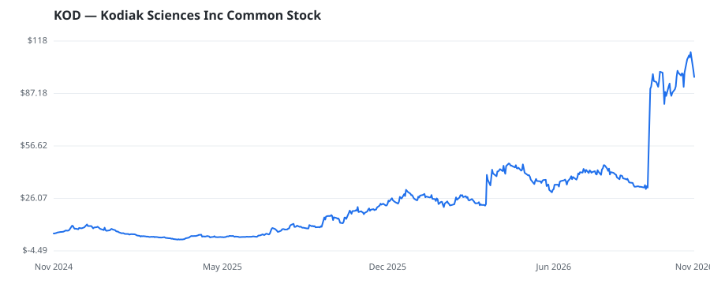

bullish · bearish · n/a — dots: price>SMA10 · SMA10>SMA50 · SMA50>SMA200 · up>down volume (20d)
Pharmaceuticals & Biotech · mid cap

Kodiak Sciences Inc has developed a new technology platform, the Antibody Biopolymer Conjugate (ABC) platform, for retinal medicines. Its investigational medicine, tarcocimab tedromer (Zenkuda or tarcocimab), is an anti-VEGF therapy built on Kodiak's proprietary ABC platform. Another investigational medicine, KSI-501, is an anti-interleukin 6, or IL-6, VEGF-trap bispecific therapy built on the ABC platform and is being developed for high-prevalence retinal vascular diseases and intended to address the unmet needs of extended durability and targeting disease biology beyond VEGF for differentiat BIOLOGICAL PRODUCTS, (NO DIAGNOSTIC SUBSTANCES) · website
| Revenue | — | Net income | $-230.0M |
|---|---|---|---|
| Operating income | $-234.4M | Diluted EPS | $-4.32 |
| Assets | $351.5M | Equity | $157.4M |
This name produced 0.6% of the ranked funds’ total alpha.
| Fund | Fund alpha vs SPY | Position | % of book |
|---|---|---|---|
| Board of Trustees of The Leland Stanford Junior University | +31% | $66M | 11.5% |
Hedge data: SEC EDGAR 13F · ranked funds beat SPY in >50% of their quarters · fund alpha = mirror-portfolio return minus SPY.